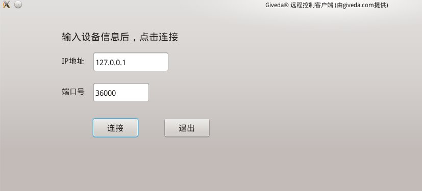

|
Giveda® Embedded Midware
1.2.0
本文档受《版权法》、《版权公约》保护。深圳技达®版权所有
|
Qt是欧洲人创始的一个优秀的中间件，API简单易用，远远超越了那些同类产品；但Qt并不是为MCU设计的，根本不可能应用在只有几百KB资源的MCU上。
我很欣赏Qt的优雅，她提供的API非常直观、符合工程师的直觉、简单易用。在汲取了Qt精华的基础上，我做了“Giveda®嵌入式中间件”这个产品，它为开发者提供了类似Qt的API；
它不仅仅是一个图形库，它还为你提供了非常友好易用的、人性化的tcp/udp/bluetooth方面的API接口，它是一个适用于MCU开发的重量级软件开发平台。
为了更好适用于MCU开发，Giveda®嵌入式中间件包含了一个非常优秀的工程裁剪和配置系统，支持精确裁剪。
Qt最早诞生在桌面领域，获得了很大成功，虽然Qt没能利用好自己的优势、在移动端操作系统的竞争中落败了，但时至今日Qt都依然是开发跨平台桌面应用的最佳选择。
我很敬仰Qt为世界做出的杰出贡献，我也很理解像Qt或微软这样的公司，他们只守得住自己既得的桌面市场、却总是在新兴市场落败、抓不住新型市场的机会。
我希望“Giveda®嵌入式中间件”能够像Qt一样成为一个别具一格的产品。并且尽可能的，我希望可以围绕该产品形成一个物联网领域的开发者生态，围绕该产品为社会创造更多的就业机会。
就从一个最简单的hello world示例开始
利用“Giveda®嵌入式中间件”提供的远程桌面功能，您可以在手机上查看和操作MCU设备的图形界面（远程桌面）。 换句话说，使用“Giveda®嵌入式中间件”的远程桌面功能，您可以将MCU设备的图形界面显示到手机、平板、或PC等任何有屏的设备上。 需要GUI界面、但却没有硬件显示屏的设备，可以使用智能手机作为该设备的显示屏。 利用“Giveda®嵌入式中间件”提供的远程桌面功能，可以实现一个统一的手机APP能够操控不同厂商的不同设备。
首先，你需要从如下网址下载 SDK: http://giveda.com/get-giveda-gui.php SDK是一个压缩包，比如 Giveda_Remote_GUI_v1.0.tar.gz。 在全英文路径中解压上述压缩包，得到Giveda_Remote_GUI_v1.0目录。请确保Giveda_Remote_GUI_v1.0目录的绝对路径中没有任何中文字符，
比如/home/lei/下载/Giveda_Remote_GUI_v1.0/这样的带有中文的路径是不允许的，带中文的路径会导致编译出错。
如果编译出错，请检查编译路径中是不是存在非英文字符。
进入Giveda_Remote_GUI_v1.0/code目录，该目录的结构如下： | ├── code code里面包含了所有的代码 ├── README.txt Read Me 帮助文档 └── remote-client 远程控制客户端
进入Giveda_Remote_GUI_v1.0/code目录，该目录的结构如下： ├ ├── doc 开发手册 ├── example example └── pics lib pic dir（给远程控制客户端传入这个路径）
进入Giveda_Remote_GUI_v1.0/code/example目录，该目录的结构如下： | ├── gCtrlButton 窗体和按钮 ├── gCtrlIconView 图标视图、按钮 ├── gCtrlItem 文字标签、图片标签、滚动字幕、按钮 ├── gCtrlLineEdit 输入框、input box、按钮 ├── gCtrlListBox 列表视图、按钮 ├── gCtrlMsgBox 对话框、窗体、按钮 ├── gCtrlProgressBar 进度条、按钮 ├── gCtrlRadioButton 单选按钮 └── hello_world hello_world（最简单的示例程序）
你可以进入以上任一目录然后进行编译。比如你想编译gCtrlButton，就顺序执行如下命令： cd gCtrlButton cmake ./ #每次你修改替换了图片后，都需要再次执行cmake make ./gCtrlButton #执行编译得到的可执行软件
上述程序的输出如下： #该程序作为远程控制的服务端，已经打开了本机的36000端口，等待远程控制客户端连接 Giveda: listening on tcp/udp port[36000] #当前还没有远程控制客户端连接 Giveda warning: [paintEvent(), line 167] there is no screen[-1] #当使用远程控制客户端连接时，需要用到这个设备型号。 device model=[gCtrlButton]
SDK里面有一个使用Qt4编写的远程控制客户端remote-client.qt4，它的用法如下： usage: ./remote-client.qt4 lib_pic_dir app_pic_dir 其中，lib_pic_dir是固定的，统一为Giveda_Remote_GUI_v1.0/pics；对于不同的app，app_pic_dir是不同的， app_pic_dir的格式如下：Giveda_Remote_GUI_v1.0/code/example/设备型号/pics/ 上述gCtrlButton远程控制服务端所对应的app_pic_dir为Giveda_Remote_GUI_v1.0/code/example/gCtrlButton/pics/
现在，我们来启动远程控制客户端，连接上述gCtrlButton远程控制服务端。执行如下命令： cd Giveda_Remote_GUI_v1.0/remote-client/ ./remote-client.qt4 ../code/pics/ ../code/example/gCtrlButton/pics/
远程控制客户端remote-client.qt4的界面如下：输入远程控制服务端的IP地址和端口号，点击连接，即可进行远程控制。
好了，简易的指导就到这里了，现在去开始你自己的尝试吧！ 如果出现连接出错提示，请检查IP地址和端口号是否正确。如果界面显示异常，请检查你传递给remote-client.qt4的lib_pic_dir和app_pic_dir
以上SDK中使用到了Qt-4.8.6。向Qt致敬！ 以上SDK在ubuntu 14.04 x86_64下测试通过，基于以上SDK开发出来的应用软件具有高度的可移植性。 你尽可在linux下完成产品的开发和调试工作（linux下面做开发还是很方便高效的），深圳技达®保证让你能够一次开发，到处运行。 如果开发遇到问题、或者需要其它软硬件平台的版本，请联系lei@giveda.com
Giveda®嵌入式中间件为开发者提供了类似Qt的API，具体的，包括如下功能模块：
Giveda®嵌入式中间件包含了所有常用的GUI控件，并可以快速组装新控件。
Giveda®嵌入式中间件包含了一个非常优秀的裁剪系统，支持文件级和函数级的裁剪。如果您的MCU硬件配置非常之低，那么， 您可以选择将其它模块裁剪掉，只保留GDI这一块，以适应您的MCU硬件配置。只保留GDI这一块的话，初步预估需要几KB到 几十KB的RAM和ROM，CPU频率几十MHz。
Giveda®嵌入式中间件可以灵活适配各种显卡和硬件屏幕驱动。 此模块暂无文档。
Giveda®嵌入式中间件包含了一个支持函数级裁剪的事件及事件处理系统
使Giveda®嵌入式中间件区别于其它同类框架的关键一点是，Giveda®嵌入式中间件使用了Giveda®信号槽。 利用“Giveda®信号槽”，开发者在不依赖ANSI c++之外的任何机制和工具的前提下，即可实现对象之间的解耦合。 “Giveda®信号槽”支持ANSI c++并向后兼容（支持ANSI c++及其后续所有c++标准；ANSI c++即ISO c++98）。 可以自豪地讲，“Giveda®信号槽”支持市面上所有的c++编译器。
Giveda®嵌入式中间件不仅仅是一个图形库，它还为你提供了非常友好易用的、人性化的tcp/udp方面的API接口。
Giveda®嵌入式中间件不仅仅是一个图形库，它还为你提供了非常友好易用的、人性化的bluetooth方面的API接口。 (此模块文档暂不公开)
Giveda®嵌入式中间件不仅仅是一个图形库，它还为你提供了非常友好易用的、人性化的工具API接口。
 1.8.6
1.8.6